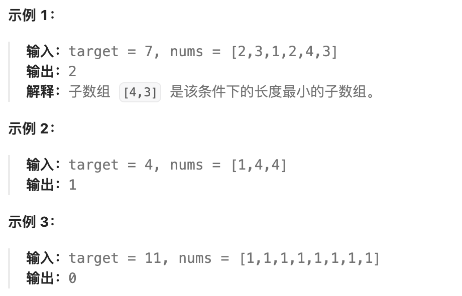
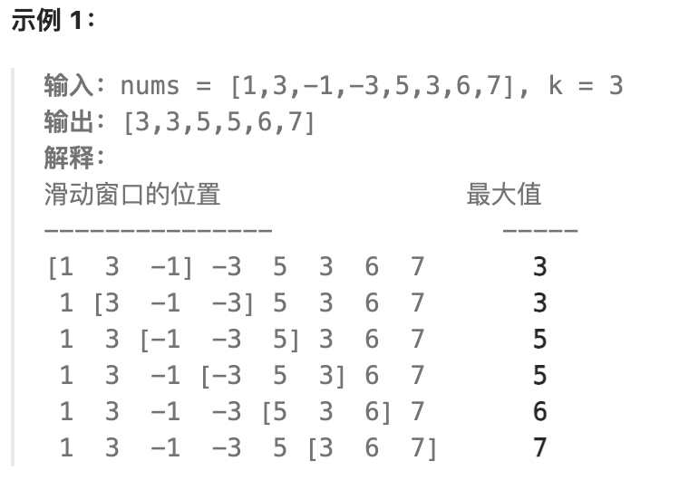

滑动窗口
滑动窗口其实是一种思想，在解题的时候避免了暴力枚举而产生的大量冗余，常见的运用在数组遍历的时候需要找到的一段连续的具有某个特征的数据
因为我们需要找到的是一段连续的区间，那么需要做的是:
- 先找到一段符合条件的子区间
- 开始维护两个左右指针
- 同时维护若干个变量 -> 用于保证左右指针区间内部符合条件
- 进行循环往复的执行维护区间的操作，直到遍历完整个数组/连续区域
例题
1 长度最小的子数组
给定一个含有n个正整数的数组和一个正整数target。
找出该数组中满足其总和大于等于 target 的长度最小的
子数组 [numsl, numsl+1, ..., numsr-1, numsr] ，并返回其长度。如果不存在符合条件的子数组，返回0。

1 2 3 4 5 6 7 8 9 10 11 12 13 14 15 16 17 18 19 20 21 22 23 24 25 26 27 28 29 30 31 32 33 34 35 36 37 | |
题解
这题的思路就比较清晰，就是先找到一个符合条件 (sum >= target) 的数组，然后开始维护左右两个指针
left 和 right,通过右移 left 左指针，我们可以得到缩小后的区间长度(update),但右移right指针的目的是获得全新的符合条件的区间，依次往复。
同时，在遍历完整个数组的时候，我们要对left指针单独做一次右移处理，来做最后的一次更新最小区间的操作。
2 滑动窗口的最大值
给你一个整数数组 nums，有一个大小为 k 的滑动窗口从数组的最左侧移动到数组的最右侧。你只可以看到在滑动窗口内的 k 个数字。滑动窗口每次只向右移动一位。
返回 滑动窗口中的最大值 。

1 2 3 4 5 6 7 8 9 10 11 12 13 14 15 16 17 18 19 20 | |
题解
简单的来说就是，我们构造了一个最大堆priority_queue<pair<int,int>> pq,里面存放的是一个元组\((nums[i],i)\)，然后我们只需要维护这个最大堆即可，在每次将窗口往右平移的过程中，我们时刻关注最大堆的堆顶，很自然的想到，我们只需要每次维护的时候，观察这个堆顶元素是否是滑块内的最大值即可。倘若这个最大值不是滑块内，那么我们就将这个堆顶弹出，以此类推。直到堆顶的元素是滑块内的最大值。这样的好处是不用像我们一开始的方案一样，如果出现了滑块最左边是之前滑块内的最大元素，在向右边移动的一个单位之后，就迅速的对剩下的内容进行sort。这个做法的时间成本其实是挺大的，尤其是在如果我们在一个降序的序列中，那么就等于说每次都要进行排序，例如以下的情况：
那么就是每次都需要重新排序，但倘若维护一个简单的最大堆，我们的单步操作也只需\(O(\log{N})\)的复杂度，就算是每一步都需要维护，那也只需要\(O(N\log{N})\)的复杂度，但倘若是\(O(N\log{N})\)的内置排序，如果遇到特殊情况，就需要\(O(N^2\log{N})\)的时间复杂度。这可是一笔很大的开销！